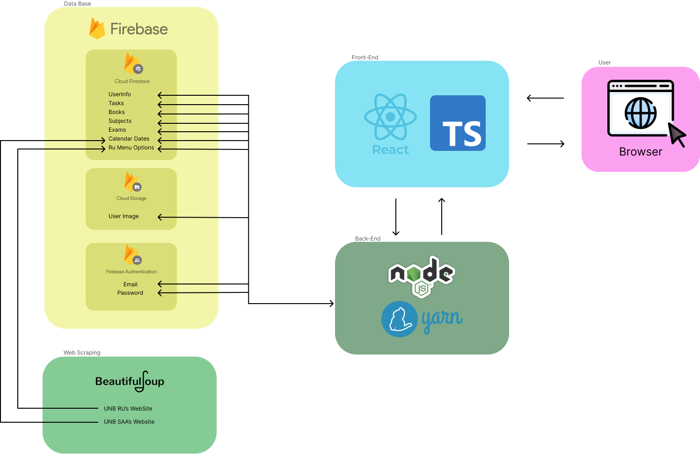

Arquitetura do Projeto
 Link para melhor visualização: https://miro.com/app/board/uXjVKQTq3Zw=/
Visão Geral
A plataforma de desenvolvimento para estudantes da Universidade de Brasília (UnB) é projetada para oferecer uma experiência integrada e eficiente. A arquitetura do projeto é composta por várias camadas, cada uma desempenhando um papel específico no funcionamento da plataforma.
Componentes Principais
1. Frontend
O frontend da plataforma é responsável pela interface com o usuário. É desenvolvido utilizando tecnologias web modernas, como o JavaScript, com o framework ReactJS. Ele se comunica com o backend por meio da API Firestore para acessar e exibir os dados. Além de, utilizar bibliotecas para a criação de componentes para a melhora da usabilidade do usuário na plataforma.
2. Backend
O backend é a espinha dorsal da plataforma, lidando com a lógica de negócios e o armazenamento de dados. Utiliza o Firebase para autenticação de usuários e armazenamento de dados em tempo real, além de, usar a biblioteca NodeJS para a instalação de novas dependências para facilitar o desenvolvimento da plataforma.
3. Banco de Dados
O banco de dados é utilizado para armazenar informações essenciais da plataforma, como dados dos usuários, cardápio da cafeteria e eventos do calendário acadêmico. No caso deste projeto, o Firebase fornece um banco de dados NoSQL altamente escalável e de baixa latência.
4. Serviços Externos
Além dos componentes principais, a plataforma integra-se com serviços externos, como o site oficial da UnB para obter informações atualizadas, como as informações do calendário e cardápio.
Fluxo de Dados
O fluxo de dados na plataforma segue um padrão de solicitação e resposta:
- O usuário interage com a interface do usuário (frontend), realizando ações como fazer login, visualizar o cardápio ou acessar o calendário acadêmico.
- O frontend envia solicitações para o backend por meio da API do Firebase Firestore.
- O backend (Firestore) processa as solicitações, acessa os dados necessários no banco de dados e realiza as operações solicitadas.
- O backend retorna os dados solicitados ao frontend, que os exibe na interface do usuário para o usuário final.
Considerações de Segurança
A segurança é uma preocupação fundamental na arquitetura do projeto. As seguintes medidas são implementadas para garantir a segurança dos dados e dos usuários:
- Autenticação de usuários por meio do Firebase Authentication para garantir que apenas usuários autorizados tenham acesso à plataforma.
- Autorização baseada em funções para controlar as permissões dos usuários e restringir o acesso a recursos específicos com base no papel do usuário.
- Implementação de práticas recomendadas de segurança, como proteção contra ataques de injeção de SQL e XSS (Cross-Site Scripting), para evitar vulnerabilidades de segurança.
Conclusão
A arquitetura do projeto é projetada para oferecer uma plataforma robusta, escalável e segura para os estudantes da UnB. Com componentes bem definidos e uma abordagem centrada no usuário, estamos confiantes de que nossa plataforma atenderá às necessidades dos usuários e proporcionará uma experiência excepcional.